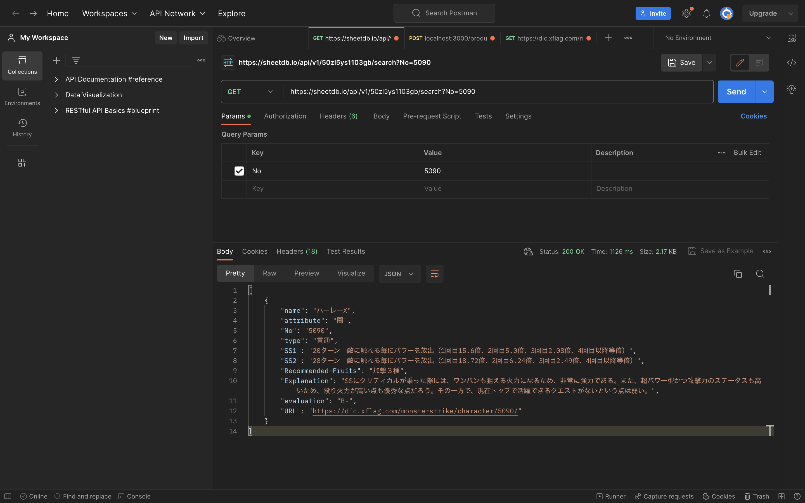

モンスターストライクのキャラクターについてのおすすめの育成方法や解説、評価などついて個人的にまとめたものをAPIにしました。データのGETが可能になっております。
モンスターストライクのキャラクターの詳細を入手したい人は、使ってみてください。
APIリンク: https://sheetdb.io/api/v1/50zl5ys1103gb
以下は検索の例です：
https://sheetdb.io/api/v1/50zl5ys1103gb/search?name=キャラクター名https://sheetdb.io/api/v1/50zl5ys1103gb/search?No=ナンバー検索結果の画面
